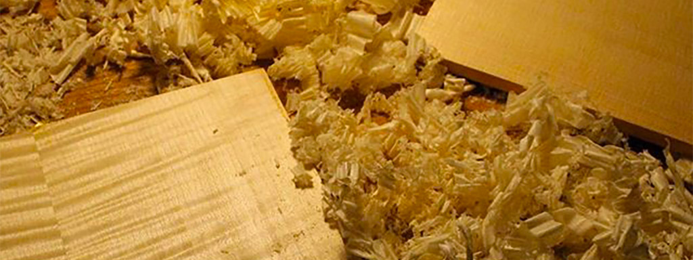

VENTE ET SERVICES
L’atelier propose une gamme communément renouvelée d’instruments du quatuor neufs et anciens, des suivis d’entretien et de réglages ainsi qu’un inventaire d’accessoires et d’archets. L’atelier offre également son expertise d’évaluation et d’attestation de valeur à l’écrit.
BOIS DE LUTHRIE
Je fais également la vente de bois de lutherie destiné aux luthiers pour la fabrication de violons et altos. Les essences disponibles sont principalement l'érable ondé et érable piqué pour les fonds, manches et éclisses. Pour les tables, l’épicéa européen, l'épinette blanche et rouge et l’épinette d’engelman.
LOCATION
Nous louons des violons, altos, violoncelles et contrebasses à court et à long terme. Consultez-nous pour plus d'information sur notre programme de location-achat.
FABRICATION
Jonathan Dubuc fabrique des violons, des altos et des violoncelles dans un style très personnel; inspiré par les instruments anciens, celui-ci a développé une facture où, comme sur bien des violons des XVII et XVIII siècle, un travail très rapide et une finition expédiée ont laissé des marques d'outils à différents endroits. Le vernis, fortement dégradé, vient renforcer l'illusion que ces instruments ont déjà passé à travers les siècles.
Reconnus pour leur facilité de jeu et leur confort, les instruments de Dubuc peuvent être essayés à Québec, à Toronto, à Victoria et ailleurs dans le monde. En plus de ceux déjà disponible au magasin, il est également possible de passer une commande au luthier afin d'avoir un instrument personnalisé; le son, la couleur du vernis, le modèle, etc. peuvent ainsi être adaptés au goût de chaque musiciens.